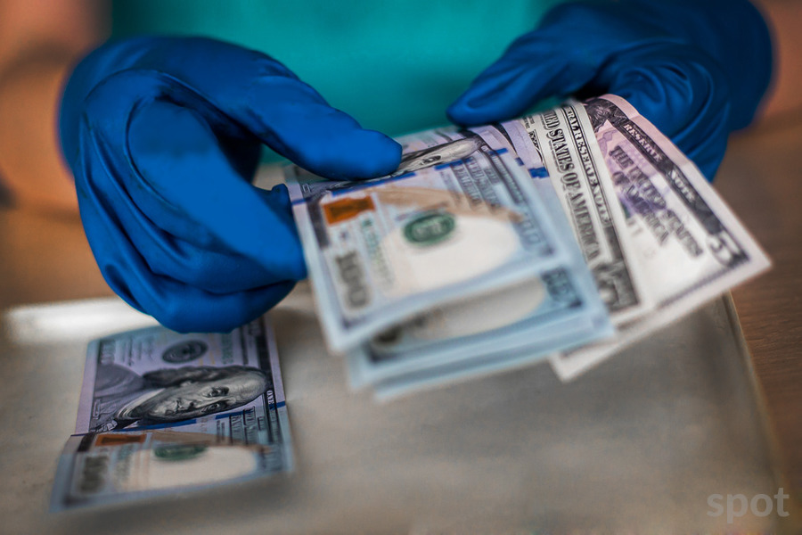

Hozirda O’zbekistonda mavjud 33 ta bankdan 23 tasi xorijiy valyutada omonat ochish imkonini beradi. Masofaviy tarzda 13 ta bankda omonat ochish mumkin. O’rtacha yillik stavka 4−5% ni tashkil etmoqda. Eng yuqori foizli (6%) tariflarni Ravnaq-bank, “Trastbank” va Hi-Tech Bank bir yildan uch yilgacha muddat bilan taqdim etmoqda.
Foto: Yevgeniy Sorochin / Spot
Spot so’mdagi milliy valyutadagi online va offline omonatlar haqida maqola chop etgan edi. Quyidagi jadvalga O’zbekiston banklarida xorijiy valyutadagi depozit ochish imkoni bo’lgan banklar haqida ma’lumot berilgan
Oxirgi marta e’lon qilingan depozitlar haqidagi maqoladan keyin omonat qo’yish shartlari biroz o’zgardi. (2021 — yil, iyun) Yillik foiz stavkalari 3−6%gacha o’zgaradi
Hozirda O’zbekistonda mavjud 33 ta bankdan 23 tasi xorijiy valyutada omonat ochish imkonini beradi. Rasmiylashtirish mobil ilova, sayt orqali yoki bank filiallarida amalga oshirilishi mumkin.
O’tgan yili onlayn tarzda omonat ochish foizlari yuqori bo’lgan bo’lsa, joriy yilda bu holat kamaygani ma’lum bo’ldi. Hamkorbank, “Turonbank”, “Trastbank”, Ravnaqbank, InfinBank da foizlar kamaygani qayd etilmoqda. qolgan banklarda esa o’zgarishlar
mavjud emas.
O’rtacha yillik stavka 4−5% ni tashkil etmoqda.
Ochish uchun sizga $10 dan $500 gacha pul kerak bo’ladi. To‘rtta bankda minimal miqdor bu chegaradan oshadi. ($5000 — “Orient Finans bank”, $1000 — Hi-Tech Bank, $2000 — Ziraat Bank Uzbekistan va $10 000 — Hamkorbank).
Omonatlarni saqlash
muddati 6 oydan 3 yilgacha.
Jadvalda ko’rsatilmagan banklar ma’lum sabablarga ko’ra, jismoniy shaxslarga xorijiy valyutada depozit ochishni vaqtinchalik to’xtatgan.